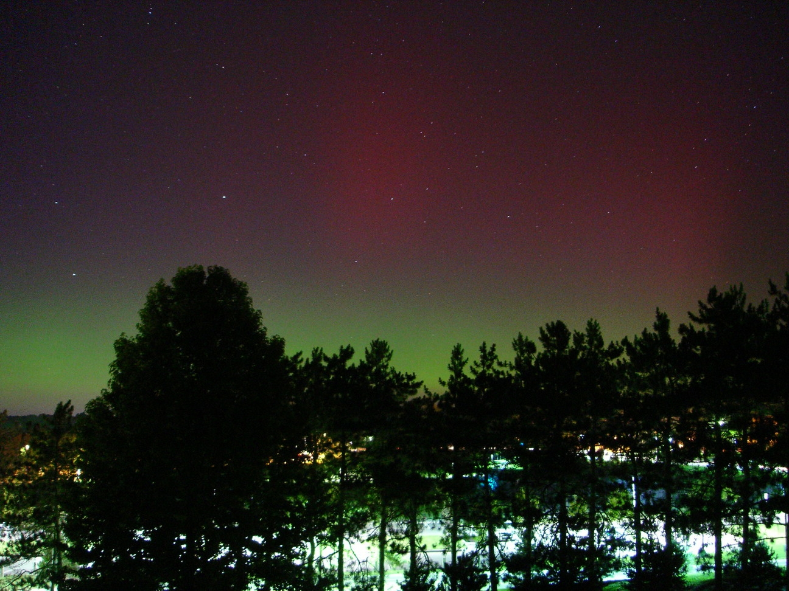
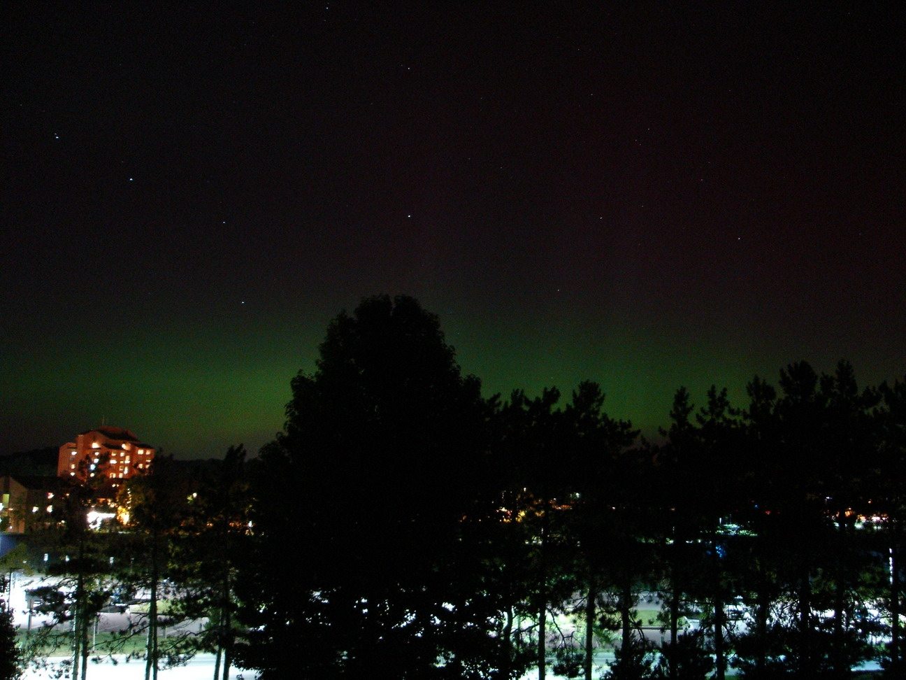
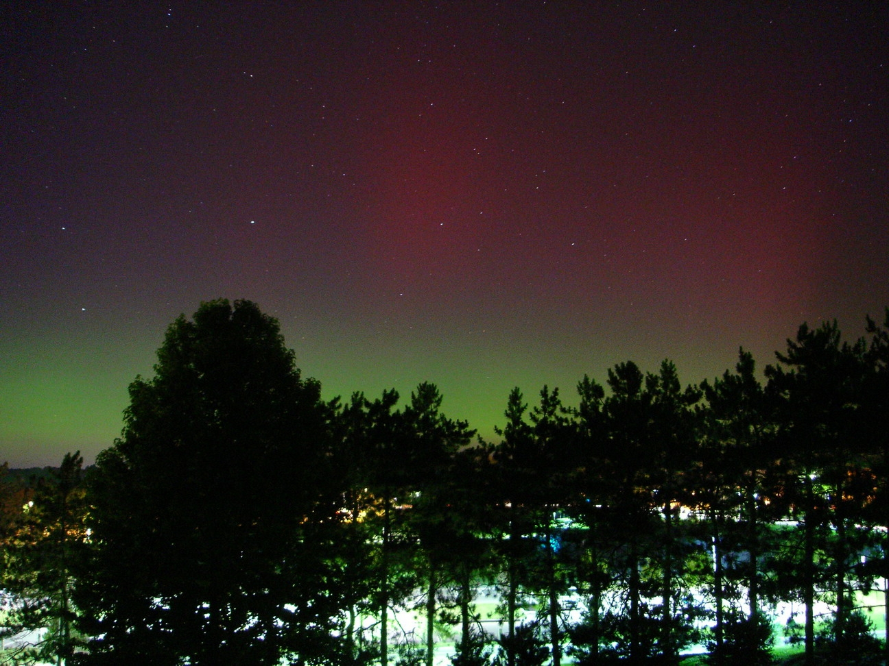
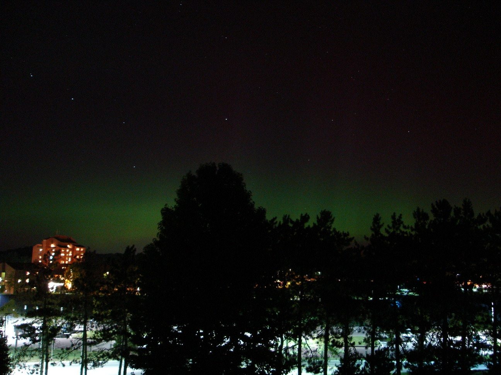

September 10 Auroras
These pictures were taken by Matipon Tangmatitham and Carlos Nieto looking north from the roof of Fuertes Observatory.


These pictures were taken by Matipon Tangmatitham and Carlos Nieto looking north from the roof of Fuertes Observatory.

